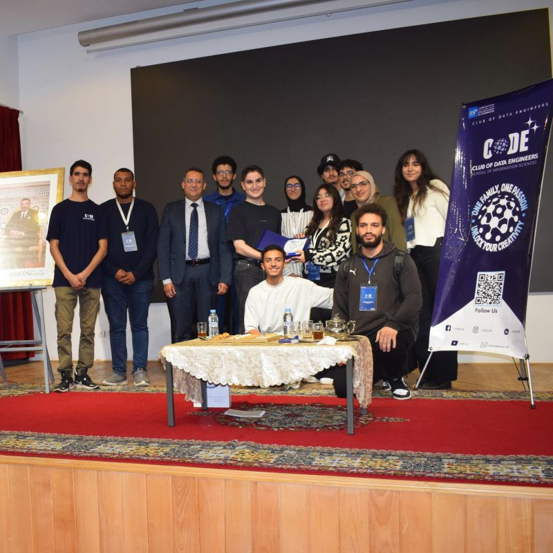

Atay m3a Code
Une série de discussions inspirantes autour d'un verre de thé.

Épisode 1 : Dr Khalil Mrini
1er Novembre 2025
CODE-ESI a eu le plaisir de lancer notre série de discussions "Atay m3a Code" avec un invité inspirant : Dr. Khalil Mrini, Senior Research Scientist chez TikTok ! ✨
La soirée a été remplie d'histoires inspirantes, d'idées innovantes et, bien sûr, de discussions techniques autour d'un verre de thé. ☕💡 Dr. Khalil Mrini a partagé son parcours unique dans la recherche, suscitant enthousiasme et curiosité parmi nos membres et les invités des écoles voisines.
Épisode 2 : Mr. Saad Hermak
1er Novembre 2025
Bienvenue au deuxième épisode de "Atay m3a Code" ! 🌟🍵
Cette série mélange technologie et inspiration, un verre de thé à la fois. Dans cet épisode, nous avons le plaisir d'accueillir M. Saad Hermak, un expert en tests d'intrusion (Penetration Tester) et membre de l'équipe Red Team d'OpenAI. 🛡️⚡
Ensemble, nous explorerons les intersections fascinantes entre la cybersécurité et l'IA, plongeant dans des histoires de découverte de vulnérabilités et de construction de systèmes plus intelligents et plus sûrs.